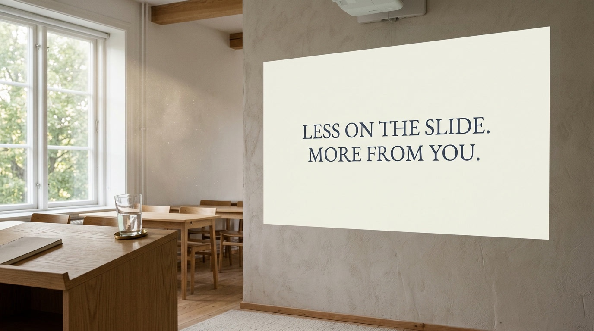

En praktisk handbok för dig som behöver bli hörd i ett rum — i klassrummet, på personalkonferensen, eller på ett event
Johan Lindström
Innehåll
Tre principer som formar guiden03
De tre kanalerna — slides, kropp, ord05
Del 1 — Varför du presenterar06
Vad publiken faktiskt minns06
Sineks Golden Circle · Logik och känsla08
Övning: Ditt varför10
Del 2 — Slides som verktyg12
Ett budskap per slide · Reglerna12
Färg, typografi, blickstyrning14
När din slide krockar med dig — vad du gör i stället16
Del 3 — Framförandet i rummet18
Närvaro: blicken, pausen, slutet18
Det digitala — kamera, ljud, ögonkontakt21
Del 4 — Röst, kropp och språk23
Träningsmetaforen · Tre saker att jobba med23
Avslutning · Sju moduler i sju meningar25
Om författaren27
Tre principer som formar guiden
Innan vi går in på slides, blickar och pauser — några ord om varför. De flesta kurser i presentationsteknik börjar i fel ände. De börjar med Keynote, fonter och övergångar. De ger checklistor utan att fråga varför du ska upp och tala över huvud taget. Den här guiden gör tvärtom. Tre principer ligger bakom varje rekommendation på de sidor som följer.
Hantverket bär tekniken
Ordet teknik kommer från grekiskans technē — konst, skicklighet, hantverk. Den definitionen är viktigare än man tror. Presentationsteknik är inte ett verktyg du installerar utan ett hantverk du utvecklar. Som alla hantverk går det att lära sig, men det kräver att du vill ta till dig vad som fungerar, ta reda på varför det fungerar, och lägger tid på att träna för att bli bättre. Slides utan hantverk är bara dekoration. Hantverk utan slides bär hur långt som helst.
Publiken är experten — på sin egen uppmärksamhet
Du kanske kan ditt ämne. Det räcker inte. I rummet sitter trettio, sjuttio eller tvåhundra personer som vart och ett av sina hjärnor avgör vad som är värt att lyssna på och vad som inte är det — sekund för sekund. Du kan inte tvinga dem att lyssna. Du kan göra det enkelt eller svårt för dem att hänga med. Den här guiden är skriven från publikens perspektiv, inte talarens. Vad ser de? Vad hör de? Vad kommer de ihåg om en månad?
Johans anteckning
Efter att ha hållit och sett tusentals presentationer — som lärare, skolledare och utbildningsansvarig — har jag landat i en obekväm sanning: det är inte slidsen som avgör om presentationen fungerar. Det är de val som gjordes innan slidsen byggdes. Vad ska de tänka, känna eller göra när jag har slutat? När den frågan är besvarad blir resten arbete. När den inte är besvarad blir det dekorerad förvirring.
— JL
Det viktigaste är vad de gör efteråt
En lyckad presentation mäts inte i vad du sa — inte heller i vad publiken klappade åt. En lyckad presentation mäts i vad publiken tänker, känner eller gör annorlunda när de går ut ur rummet. Det är det enda måttet som spelar roll. Allt i den här guiden — från valet av en enda bild på en slide till var du står med fötterna under en paus — är medel för det målet. Inte mål i sig.
Se upp
De finaste slidesen i världen räddar inte en presentation där du själv inte vet vad du vill ska hända i rummet. Innan du öppnar Keynote, svara på den här frågan i en enda mening: Vad ska de tre viktigaste personerna i rummet göra annorlunda imorgon? Om du inte kan, har du inte bestämt presentationen ännu — bara dess yta.
De tre kanalerna — slides, kropp, ord
I varje presentation arbetar du med tre kanaler samtidigt: dina slides, din kropp och röst, dina ord. De är inte tre alternativ — de är tre lager som måste samverka. När de drar åt samma håll förstärker de varandra. När de drar åt olika håll konkurrerar de — och publiken slutar lita på vilken som helst av dem.
Slides — vad de ser
Slides är inte din anteckningsbok och inte din rapport. De är ett visuellt ankare för det du säger. En bra slide gör tre saker: den fångar uppmärksamheten, den förstärker en specifik tanke, och den lämnar plats åt din röst. Det är ett restriktivt verktyg — och det är meningen. Mer text på sliden ger inte mer information; det ger mindre uppmärksamhet åt dig.
Kropp och röst — vad de känner
Det är här trovärdigheten avgörs. Publiken läser dig konstant: står du stilla eller skiftar du nervöst? Tittar du på dem eller på sliden? Pausar du eller babblar du? Energin i rummet är inte mystik — det är summan av många små signaler från din kropp och din röst. Du kan inte tala dig till trovärdighet om kroppen säger något annat.
Ord — vad de hör
Ord bär argumentet. De konkretiserar, de berättar, de övertygar. Men ord ensamma — utan stöd från slides och kropp — drunknar. Ord behöver de andra två kanalerna för att landa, och de andra två behöver orden för att betyda något. Det är treenigheten du arbetar med.
Del 1
Varför du presenterar
Innan dina slides, innan din röst, innan något annat: vad är det egentligen du vill ska hända i rummet? Den här delen är fundamentet som allt annat vilar på. Hoppa över den och du bygger ett vackert hus utan grund.
Vad publiken faktiskt minns
Tänk på en presentation eller ett möte du var med på för fyra–åtta veckor sedan. Vad minns du? Troligen inte mycket. Möjligen ett enstaka fragment, en känsla, någon bild som visades — eller i värsta fall ingenting alls. Det är en viktig observation, för den säger något om hur människor faktiskt fungerar.
Vår hjärna utsätts hela tiden för nya intryck och måste filtrera bort allt som inte är viktigt. Det finns saker du kan göra för att hjälpa publiken minnas det du sa, men ingen kommer ihåg allt. Du måste välja ut det viktigaste och bygga en strategi för hur du får just det att fastna.
Hjärnan minns bilder bättre än text och text bättre än siffror. Ändå byggs de flesta slides inte optimalt.
— observation från trettio års klassrum
Tre saker hjälper minnet
Forskningen är slående konsekvent på den här punkten, och praktiken bekräftar det. Tre saker fastnar i hjärnan långt efter att resten har glömts bort: bilder som förstärker ett budskap, berättelser som binder fakta till en konkret situation, och känslor — överraskning, igenkänning, indignation, glädje. En presentation som drar nytta av alla tre planterar fler ankare i publikens minne än en som drar nytta av en eller noll.
Det betyder inte att fakta är onödigt — tvärtom. Fakta är ankarens innehåll. Men fakta utan bild, berättelse eller känsla driver inte djupt nog för att stanna. Tabellen med siffror är försvunnen ur publikens medvetande innan du har klickat vidare till nästa slide.
Prova det här
Tänk på den presentation du höll senast. Skriv ner — ärligt — vilka tre saker du tror att publiken minns en månad senare. Inte vilka tre saker du sa: vilka tre saker de minns. Om svaret är "ingen aning" har du hittat din nästa utvecklingsfråga.
Sineks Golden Circle
Simon Sineks modell The Golden Circle är enkel men användbar: människor reagerar på varför du gör något, inte på vad du gör. Det vanligaste misstaget när någon presenterar är att börja med vad: vad är detta, vad gör det, vad kostar det. Det är fakta — och fakta i sig själva väcker sällan känslor.
Tänk på en bilannons. Specifikationerna är enkla att räkna upp: 152 hk, 0–100 på 7,2 sekunder, svart med röda säten, 248 liter lastutrymme. Det är fakta. Det är inte ett varför. Bilköpet sker när någon kopplar fakta till en känsla — och känslan har sin grund i ett varför, inte i ett vad.
Samma logik gäller i en presentation, oberoende av om publiken är en klass elever, en arbetsgrupp eller en hel kommunfullmäktige. Frågan blir: vad är det du brinner för i ämnet, och vad är det du tror på? Det är publikens ingång till allt det andra. Brinner du för det kommer publiken att känna det. Går du på autopilot kommer publiken också att känna det — och sluta lyssna.
Logik och fakta — eller instinkter och känslor?
Det finns en utbredd föreställning att rationella beslut fattas på rationella grunder. I praktiken stämmer det inte. Beslut fattas av människor som tittar på fakta och känner något — tillit, oro, övertygelse, tvivel. Tabellen med fakta i sig själv övertygar ingen.
Det betyder inte att du ska skippa fakta. Tvärtom: fakta är ditt verktyg för att framkalla rätt känsla — tillit, igenkänning, insikt. En presentation som är tom på fakta känns slarvig. En presentation som bara är fakta känns kall. Den som fungerar i praktiken kombinerar båda — tillräckligt med fakta för att publiken ska tro på dig, tillräckligt med känsla för att de ska bry sig om det du säger.
Hur du formulerar ditt varför
Varför är inte ett uttalande om vad du gör. Det är ett uttalande om varför det gör skillnad. Tre exempel — samma område, tre olika nivåer av varför:
Yta
"Idag ska jag prata om vår nya bedömningspolicy."
Bättre
"Idag handlar det om hur vi rättvist ska bedöma elever som halkat efter under läsåret."
Bäst
"Det jag vill att ni gör annorlunda nästa månad är att fatta era bedömningsbeslut på samma underlag — så att eleverna i 9C inte missgynnas av att hamna i fel klassrum. Det är därför vi pratar om policyn idag."
Den bästa varianten säger inte vad — den säger vad publiken ska göra annorlunda, och varför det spelar roll just nu.
Övning: Ditt varför
Innan du går vidare till slides och scenrutiner, lägg fem minuter på den här övningen. Den är inte en självhjälpsövning — den är en utgångspunkt du kommer att referera tillbaka till genom hela guiden, särskilt när vi pratar om hur du designar inledningen av en presentation.
Skriv ner — i två till fyra meningar
Varför gör du det du gör? Och varför ska någon lyssna på vad du har att säga om det? Inte slogans, inte rubriken på din LinkedIn-profil — vad brinner du faktiskt för i ditt arbete, och varför är det relevant för dem du presenterar för?
Spar svaret någonstans där du hittar det igen. När du sedan ska planera nästa presentation, börja inte i Keynote. Börja i den anteckning du nyss skrev. Sliden, rösten och kroppen ska tjäna det du skrev där — inte tvärtom.
Tre frågor som styr resten av planeringen
När ditt varför är klart, ställ dessa tre frågor om publiken — innan du designar en enda slide:
Vilka är de viktigaste tre personerna i rummet? Inte alla — de tre som måste lyssna för att presentationen ska ha lyckats.
Vad ska de göra annorlunda imorgon? Inte vad du vill att de ska "förstå" eller "fundera på". Vad ska de göra?
Vad ska de berätta för en kollega på vägen ut? Den meningen är din riktiga rubrik. Hela presentationen jobbar för den.
Johans anteckning
Jag gjorde i många år den klassiska missen: byggde slides först, formulerade syftet sist. Det är som att laga middag och bestämma vem som är gäst när maten är på bordet. Vänd på det. Bestäm publiken, bestäm utfallet, bygg presentationen baklänges från det. Det är inte mer arbete — det är mindre, för du slipper bygga slides du inte behöver.
— JL
Del 2
Slides som verktyg
Sliden är inte din anteckningsbok. Det är inte din rapport. Det är ett visuellt ankare för det du säger. När du har det klart för dig blir designvalen mycket enklare — för du vet vad sliden ska göra åt dig och vad den inte ska göra.

Ett budskap per slide
Den enda regeln som överlevt varje förändring av presentationsverktygen sedan PowerPoint 1990 är denna: en slide bär ett budskap. Om du behöver säga två saker, gör två slides. Den nya sliden kostar ingenting — den fördelade uppmärksamheten kostar allt.
Praktisk konsekvens: när du sätter dig och bygger en presentation, börja inte med antalet slides du tror du ska ha. Skriv först ner de fem till tio meningar du vill att publiken ska komma ihåg. Sedan blir det en slide per mening. Då har du ditt skelett. Allt annat — bilder, citat, övergångar — är bara dekorering av det skelettet.
De tre reglerna som gör mest jobb
Det finns många regler för slidedesign. Tre av dem gör ungefär 80 procent av jobbet. Lär dig de tre, och kvaliteten på dina slides hoppar dramatiskt — innan du har lagt en sekund på avancerade tekniker.
Ett budskap per slide. En slide, en sak. Klar.
Max sex objekt. Räkna allt: rubrik, text, bilder, ikoner, logotyper. Sex eller färre. Däröver tappar publiken översikten.
Stor text, hög kontrast. Den i bakre raden är din målgrupp. Om någon där inte kan läsa är sliden inte gjord för rummet.
De tre reglerna är inte estetiska. De följer av hur hjärnan fungerar när den både ska lyssna och titta samtidigt. När en slide bryter mot någon av dem så känner publiken det — även om de inte kan formulera varför. De zoonar ut ett ögonblick. Det ögonblicket är dyrt.
Se upp · Mallen
Den slidesmall som din arbetsgivare eller kommun har slagit i händerna på dig är optimerad för att följa visuella riktlinjer — inte för att hjälpa publiken minnas. Mallen är ett golv, inte ett tak. Bryt mot den när det tjänar publiken bättre. En tom slide med ett enda ord är ofta starkare än mallens fördefinierade rubrik-plus-bullet-list.
Färg, typografi, blickstyrning
När de tre grundreglerna sitter blir det dags för fininställningarna. De gör inte underverk på en illa tänkt slide — men de förvandlar en bra slide till en utmärkt.
Färg — få färger, medvetet använda
Två till tre färger på en slide. Inte fler. En mörk grundton, en ljus bakgrund, en accentfärg som gör jobbet att leda blicken. Allt över det blir kakofoni. Och: hög kontrast mellan text och bakgrund alltid — ljus text på ljus bakgrund är inte estetiskt, det är oläsligt.
Färg har också betydelse. Rött drar blicken — använd det för det som är viktigt, inte för rubriker som inte är det. Grönt signalerar lugn, blått trovärdighet, gult uppmärksamhet. Du behöver inte vara designer för att tänka på det här. Bara medveten.
Typografi — två typsnitt räcker
Ett typsnitt för rubriker, ett för brödtext. Mer än så och sliden börjar kännas rörig. Storleken är viktigare än valet av typsnitt: för publik i ett rum ska brödtext vara minst 24 punkter, rubriker minst 36. Det är större än de flesta tror — och därför är texten på de flesta slides för liten för rummet.
Blickstyrning — vart tittar publiken först?
Varje slide har en visuell tyngdpunkt. Det är dit publikens blick åker först — och det är därför du bör bestämma var den ska vara, inte låta det avgöras av slumpen. Storlek, färg, kontrast och placering styr blicken. Om viktigaste budskapet är längst ner till höger på sliden i grå text, har du designat sliden mot publiken, inte med dem.
En bra övning: titta på din slide i två sekunder och blunda. Vad såg du? Det är vad publiken också såg först. Om det är fel sak är det den du behöver göra större, mer kontrastrik eller centralare placerad.
Prova innan nästa presentation
Öppna en slide du redan har byggt. Räkna objekten. Är de fler än sex? Ta bort tills du är på sex eller färre. Mät rubrikens textstorlek. Är den under 36? Gör den större. Titta sedan på sliden i två sekunder och blunda — landade blicken där du ville? Om inte, flytta tyngdpunkten. Du kommer märka skillnad.
När din slide krockar med dig
Det här är den vanligaste fallgropen i hela presentationssituationen: din slide gör det svårare för publiken att lyssna på dig. Det går nämligen inte att läsa och lyssna parallellt — och om publiken tvingas välja, väljer de att läsa. Du står då där i tio sekunder och pratar för en publik som har slutat lyssna.
Tre vanligaste varianterna och vad du gör i stället:
1. Vägg av text → citat eller highlight
En sida text, projicerad på en slide, ber publiken att stänga av och börja läsa. Bästa lösningen är att inte ha hela texten på sliden alls — citera nyckelmeningen, hänvisa till källan, prata om implikationerna. Mellanvägen, när du faktiskt behöver visa hela paragrafen, är att highlighta det viktiga och tona ner resten. Då fungerar texten som referens och din röst leder läsningen.
2. Punktlistan → ett kärnbudskap eller bilder med etiketter
Åtta punkter är inte en agenda — det är en lista som publiken inte kommer minnas något av. Två frågor att ställa: är det här bara en av punkterna som faktiskt spelar roll? Visa då den och säg de andra. Eller: hör varje punkt verkligen ihop med ett ankare? Byt då bullets mot bilder med korta etiketter — det blir något att titta på, inte något att läsa.
3. Tabellen → siffran som spelar roll
Hela tabellen från Excel projicerad på sliden är värdelös. Publiken ser ett rutmönster och inte vad du försöker säga. Dra ut den enskilda siffran som faktiskt spelar roll, gör den stor, säg vad den betyder. Tabellen kan följa med som handout om någon vill verifiera sammanhanget.
Se upp · Animeringar
Animering är ett kraftfullt verktyg när det leder publikens uppmärksamhet — och en distraktion när det bara är dekoration. En enkel fade-in på ett nytt element som du just har börjat prata om: ja. En slide där fyra olika element flyger in från fyra olika håll med olika hastigheter: nej. Regel: om animationen inte motiverar sin egen existens med att hjälpa publiken förstå något, ta bort den.
När du faktiskt behöver mycket på en slide
Det finns lägen — komplexa diagram, översikter, jämförelser — där en slide behöver många objekt. När det händer: se till att dela upp det. Visa diagrammet i sin helhet, sedan zooma in på den del du faktiskt pratar om, sedan tillbaka. Eller: bygg upp diagrammet steg för steg med animering. Komplexitet är inte fienden; oseparerad komplexitet är.
Johans anteckning
När jag hjälpt andra att förbättra sina presentationer handlar det nästan alltid om att man tryckt in för mycket info på sina slides. Det är ett effektivt sätt att få budskapet att drunkna och åhörarna att sluta lyssna. Lösningen: ta bort onödiga saker och dela upp resten på fler slides. Mindre info per slide ger mer presentatör — det är nästan alltid det publiken behöver mer av.
— JL
Del 3
Framförandet i rummet
Dina slides är klara. Du står i dörren till salen — eller framför kameran — och ska gå upp. Det här är där presentatörerna lever eller dör. Kropp, blick, paus, slut. Och det digitala mötet, som lurar med att kännas enklare men som är svårare.
Närvaron — blicken, pausen, slutet
Du ska upp framför trettio personer eller tre. Det första de registrerar är inte vad du säger — det är hur du är i rummet. Står du upp? Tar du plats? Tittar du på dem eller på dina anteckningar? Allt det är signaler som publiken läser av på en sekund och som färgar deras tolkning av allt det du sedan säger.
Stå upp om du kan, plantera fötterna
Energin i rummet sjunker när du sitter ned. Stå upp om situationen tillåter — och om den inte gör det, sätt dig så att kroppen är vänd mot publiken, inte halvt mot skärmen. När du står: plantera fötterna i höftbredd, fördela vikten jämnt. Den vanliga vagga-mellan-fötter-rytmen är en signal till publiken att du är osäker. Stadigt kropp = trovärdig kropp.
Blicken — en person i taget, tre sekunder
Den vanligaste blickfällan är att svepa över rummet med ögonen utan att stanna någonstans. Det känns säkrare, men gör att ingen i publiken känner sig sedd. Bättre: titta på en person i taget, ungefär tre sekunder, säg en hel mening till personen, och gå sedan vidare till nästa. I ett rum med 60 personer behöver du inte titta på alla — fördela över zoner, så känner alla att du har sett deras del av rummet.
Pausen — det mest underskattade verktyget
Två sekunders tystnad efter en nyckelmening är kraftfullare än tre minuters retorik. Pausen säger: det jag just sa var viktigt. Pausen ger publiken tid att tänka, känna eller komma ihåg. Pausen är också det mest obekväma verktyget, eftersom du själv hör tystnaden mer än publiken gör. Du tror den är fyra sekunder; för publiken är den en sekund. Använd den.
Pausen är den enda gång publiken faktiskt får jobba. Det är där lärandet sker — inte under det du säger.
Slutet — avsluta inte med "några frågor?"
Det är den sämsta möjliga sista bilden i publikens minne — en otydlig öppning som bjuder in tystnad. Publiken är just nu mest mottaglig av hela presentationen; de har bestämt sig för om de håller med eller inte och fundera på vad de ska göra med det. Då slänger du in en flat fråga som ramen runt allt det andra.
Avsluta i stället med en mening som sammanfattar vad du vill att de ska bära med sig — den meningen du tidigare formulerade som "vad ska de berätta för en kollega på vägen ut?". Den ska vara den sista de hör. Frågor kan komma i nästa andetag, men de är inte slutet.
Prova den här veckan
I nästa presentation: skriv ut din avslutningsmening på papper. Inte slutfrågan. Den meningen. Lägg lappen längst fram i dina anteckningar. När du kommer dit, läs den eller säg den ur minnet — och pausa två sekunder efter. Lägg märke till vad som händer i rummet.
Det digitala mötet — kompensera medvetet
Digitala presentationer kännas enklare — du sitter hemma, har anteckningarna bredvid skärmen, behöver inte resa dig. I praktiken är de svårare. Skärmen tar bort de flesta signaler du brukar lita på i ett rum: kroppsspråket från publiken, energin, ögonkontakten, pauserna som har vikt. Du behöver kompensera medvetet — annars sjunker presentationskvaliteten dramatiskt.
Bra ljud före bra bild
Om publiken ska behöva välja mellan att se dig dåligt eller höra dig dåligt, väljer de att se dig dåligt. Dålig bild är irriterande; dåligt ljud gör dig oförståelig. Fler och fler datorer har bra mikrofoner idag, men har du ljud runtomkring dig kan det bli platt fall ändå. Säkerställ alla aspekter av att ljudet blir bra; det handlar inte bara om mikrofonen.
Kameran i ögonhöjd
Den vanligaste digitala missen är att ha kameran långt ner, vilket den blir om du använder en bärbar dator och ställer den på skrivbordet. Publiken får titta upp i din näsa hela mötet. Höj upp datorn så kameran hamnar i ögonhöjd. Effekten är dramatisk: du går från obekväm till professionell på bokstavligen två minuter.
Titta på linsen, inte på ansiktena
Det här är den svåraste digitala omställningen. När du tittar på publikens ansikten på skärmen ser de att du tittar bort från dem. För att skapa upplevelsen av ögonkontakt måste du titta in i linsen — vilket känns onaturligt eftersom du då inte ser publikens reaktioner. Lösningen: titta på linsen när du säger viktiga saker. Titta på ansiktena när du har pausat och låter publiken bearbeta. Du växlar medvetet.
Pausstrategi i digitalt — längre och tydligare
Det digitala äter upp tystnader på ett sätt som ett rum inte gör. Två sekunders paus i ett rum känns naturligt; två sekunders paus digitalt får publiken att kolla att förbindelsen inte har frusit. Lös det genom att göra pauserna längre och säga vad du gör: "Jag pausar här en stund så du får tänka." En instruktion till tystnaden räddar den från att tolkas som teknisk strul.
Se upp · Hybrid är svårast
Hybridpresentationen — halva publiken i rummet, halva digitalt — är den svåraste varianten. De två publikerna ser och hör olika saker, och de digitala blir nästan alltid bortglömda. Lösning: ha en moderator som specifikt bevakar de digitala (chatt, frågor, anslutning). Om du inte kan ha det, välj. Antingen är alla i rummet eller alla digitalt. Kombinationen utan moderator misslyckas mer än den lyckas.
Johans anteckning
Pandemin lärde alla att hålla digitala möten — men inte att hålla dem bra. Tre år senare ser jag fortfarande presentatörer med kameran för långt ner och dåligt ljud. De tror att deras innehåll bär. Innehållet bär halvvägs. Resten är produktionsvärden — och det tar bara några timmar att fixa.
— JL
Del 4
Röst, kropp och språk
Slides kan du ändra på fem minuter. Rösten, kroppen och språket är där de flesta presentatörer har störst utvecklingspotential — och det går bara att förändra genom medveten träning utanför själva presentationen. Den här delen är för dig som vill längre.
Träningsmetaforen
Tänk på att presentera som att gå på gym. Du blir inte stark av att läsa om träning. Du blir inte stark av att gå på ett gym en gång och kolla in maskinerna. Du blir stark av att lyfta vikter regelbundet, med teknik, med en plan, med någon som kan tekniken bättre än du och rättar dig när du gör fel. Presentationsteknik är inte annorlunda. Du kan inte läsa dig till bättre röst eller bättre närvaro. Du måste träna — och få återkoppling.
Den enskilt mest utvecklande övningen för en presentatör är att spela in sig själv på video och titta på det. Inte hela presentationen — fem minuter räcker. Det är obekvämt, ofta plågsamt. Och det är där hela utvecklingspotentialen ligger. Du kommer att se tre saker du inte visste att du gjorde, varje gång. Det är där du lär dig.
Kropp — hållning, gestik, fötterna
Hållningen avgörs vid första intrycket — innan du har sagt ett ord. Stå upp, axlarna ner, ansiktet höjt, fötterna i höftbredd. Gestik är ett verktyg, inte ett tic. När du vill betona något: en gest. När du står still: armarna naturligt vid sidan, inte korslagda eller i fickan. Spela in en presentation och titta på fötterna: vagrar de? Rör de sig fram och tillbaka? Det är en signal du kan jobba med.
Röst — tempo, volym, paus, betoning
Variation är allt. En monoton röst kan inte räddas av starka argument — publiken slutar lyssna efter två minuter. Variera tempot: snabbt när du bygger spänning, långsamt när du levererar nyckelmeningen. Variera volymen: hellre tystare på det viktiga än högre. Det tvingar publiken att lyssna närmare. Och betoning — vilket ord i meningen är viktigast? Lägg trycket där.
Det är inte rösten du har som avgör — det är vad du gör med den.
Språk — korta meningar, konkreta ord
Skriftspråk och talspråk är inte samma sak. När du läser upp en text du har skrivit för att läsas, låter den stel. Tala i stället: korta meningar, konkreta ord, bilder och berättelser i stället för abstraktioner. En presentation är inte ett långt tal — den är en kedja av korta meningar som var och en behöver landa.
Spela in dig själv — en gång i månaden
Sätt upp telefonen i ett hörn av rummet och spela in fem minuter av nästa möte du leder. Titta sedan på det. Lyssna efter utfyllnadsljud (eh, asså, liksom). Titta på fötterna och händerna. Titta på blicken — landar den någonstans, eller sveper den? Det är din egen fokusgrupp. Den ger bättre återkoppling än någon kollega vågar ge dig — och den kostar ingenting.
Sju moduler i sju meningar
Allt du har läst så här långt är värdelöst om det inte landar som något du faktiskt gör annorlunda. Det här är guiden som checklista — sju kärnpoänger, en per modul i grundkursen, att läsa när du planerar nästa presentation.
Vad ska publiken tänka, känna eller göra när du har slutat tala? Och vad ska de komma ihåg efteråt? Det är där presentationen bär. Allt annat är medel.
En slide bär ett budskap, max sex objekt, få färger, tydlig kontrast och stora teckenstorlekar — reglerna gör det mesta av jobbet.
Texttunga slides, klustrade punktlistor och tabeller med massor av data krockar med dig som presentatör — publiken kan inte läsa och lyssna samtidigt. Välj.
Stå upp, titta mot publiken, pausa när det är viktigt, och avsluta inte med "några frågor?" — avsluta med det du vill att de ska tänka på.
Digitala presentationer kräver medveten kompensation: bra ljud, kameran i ögonhöjd, ögonkontakt mot linsen, och en pausstrategi som tar hänsyn till att tystnaden känns längre.
Kropp, röst, ögon och språk är där de flesta presentatörer har störst utvecklingspotential — och det går bara att förändra genom medveten träning utanför själva presentationen.
Det viktigaste du tar med dig är inte vad du nu vet, utan vad du faktiskt gör annorlunda i nästa presentation. En sak. Konkret. Den här veckan.
Reflektion · Din första ändring
Av allt du har läst — vad är den första, konkreta saken du ska göra annorlunda nästa gång du ska hålla i en presentation? Inte "jag ska försöka bli bättre på pauser" — det är för luddigt. Hellre: "jag ska planera in en två-sekunders paus efter varje viktig slutsats". Skriv ner den. Ta fram den när nästa presentation närmar sig.
Slutord
Den här guiden är ingen samling tricks. Den är en uppmaning att flytta uppmärksamheten — från dina slides till publiken, från det du själv vill säga till det publiken faktiskt minns, från det som känns säkert (texttung slide som anteckning) till det som fungerar (en bild, en mening, en paus). Det är inte mer arbete. Det är annat arbete.
Och kom ihåg: du blir inte bättre presentatör av att läsa en bok. Du blir bättre genom att presentera, spela in dig själv, titta tillbaka, justera, presentera igen. Hantverket finns på andra sidan av repetitionen. Den här guiden är en startkarta — fortsättningen är din.
Behöver ni fortbildning kring presentationsteknik på er skola eller i er organisation är ni välkomna att höra av er till mig.
Lycka till nästa gång du går upp.
— Johan
Om författaren
Johan Lindström har 28 år i den svenska skolan: tio år som lärare, sju som skolledare, elva som utbildningsansvarig på Advania Skolpartner. Idag arbetar han som konsult, skribent och föreläsare med fokus på AI och digitalisering i skolan — primärt mot skolchefer, rektorer och lärare i Sverige.
Den här guiden bygger på erfarenheter från flera tusen presentationer i klassrum, för kollegor, och på konferens- och eventscener under tre decennier. Bakom varje rekommendation finns både fungerande exempel och misslyckanden — och insikten att skillnaden mellan en bra och en dålig presentation oftast inte är det presentatören vet, utan det presentatören har bestämt sig för att inte göra.
Hör av dig
Vill du diskutera fortbildning, föreläsningar eller workshops kring presentationsteknik — eller bredare frågor om AI och digitalisering i skolan — finns Johan på LinkedIn och choosewise.education.
Mer på choosewise.education
Hela kursen Presentationsteknik — sju moduler online med övningar, fördjupningar och interaktiva test.
RÄTT-modellen — fyra frågor som förvandlar varje "ska vi använda det här AI-verktyget?"-samtal till ett strukturerat beslut.
AI-guider — pedagogiska guider till de AI-verktyg som lärare och skolledare har tillgång till.
Bloggen — analytisk läsning om skola, AI och digitalisering — bortom rubrikerna.
Skriven med hjälp av Claude, redigerad av författaren. Strukturen, ståndpunkterna och den redaktionella bedömningen är författarens.